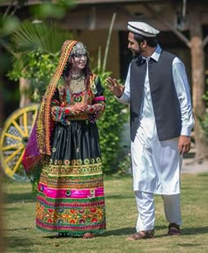
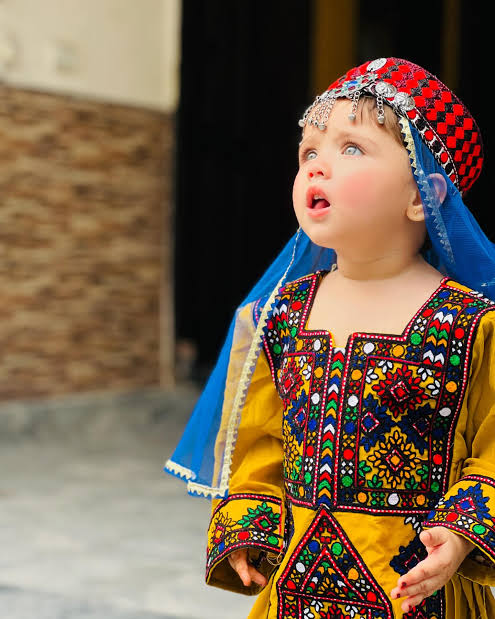

Traditional Pakistani Clothing



Style: Traditional & Cultural
Popular For: Vibrant colors, embroidery, regional identity
Download PDF File
👨🦰 Men’s Traditional Clothing
- Shalwar Kameez: National dress; loose trousers (shalwar) and long shirt (kameez). Styles vary by region.
- Kurta Pajama: Slightly modern; kurta with tighter pajama. Worn casually and formally.
- Waistcoat: Worn over shalwar kameez on formal occasions like Eid and weddings.
- Sherwani: Embroidered formal coat, worn over shalwar or kurta; common in weddings and state events.
- Achkan: Shorter than sherwani; part of formal wear.
- Headwear: Includes Sindhi/Balochi topis and turbans, especially in rural areas.
👩🦰 Women’s Traditional Clothing
- Shalwar Kameez with Dupatta: Most common attire; dupatta adds modesty and style.
- Gharara / Sharara: Traditional bridal wear; gharara has knee joints, sharara is flowy like a skirt.
- Lehenga Choli: Flared skirt with blouse and dupatta; worn at weddings and festivals.
- Frocks & Angrakha: Long flared dresses; Angrakha is a wrap-style worn with tights or churidar.
- Burqa / Abaya / Hijab: Worn for cultural/religious reasons; styles range from plain to decorated.
👧🧒 Children’s Traditional Clothing
- Boys: Mini shalwar kameez, waistcoat for formality, sherwanis for weddings.
- Girls: Colorful shalwar kameez with embroidery, frocks, ghararas for special occasions.
🧵 Regional Variations
- Punjabi: Bright colors, phulkari embroidery, short kameez with patiala shalwar.
- Sindhi: Mirror work, ajrak shawls, Sindhi topis and heavy embroidery.
- Balochi: Long kameez with detailed thread work and turbans for men.
- Pashtun (KP): Loose shalwar kameez with waistcoat for men, embroidered frocks for women.
- Kashmiri: Pheran—long cloak worn by both genders, made with warm fabrics.
"Clothing is not just tradition—it's an identity stitched with pride."